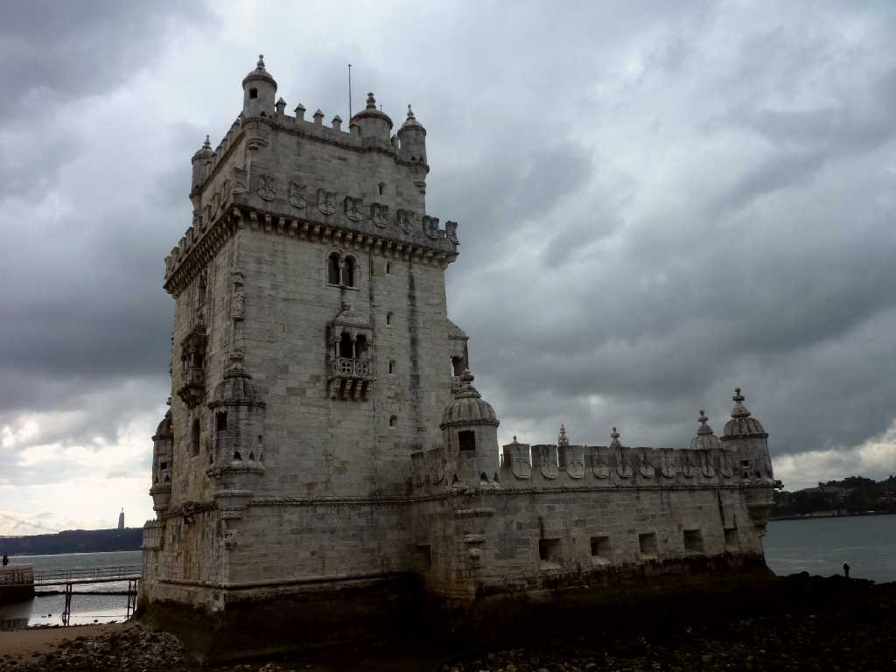
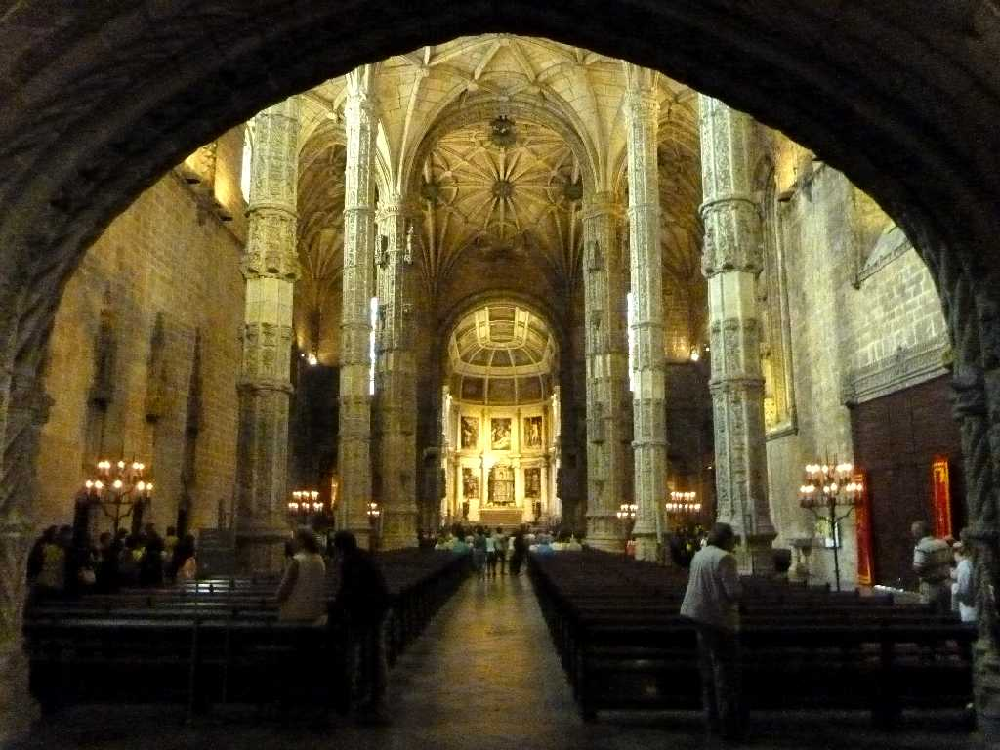
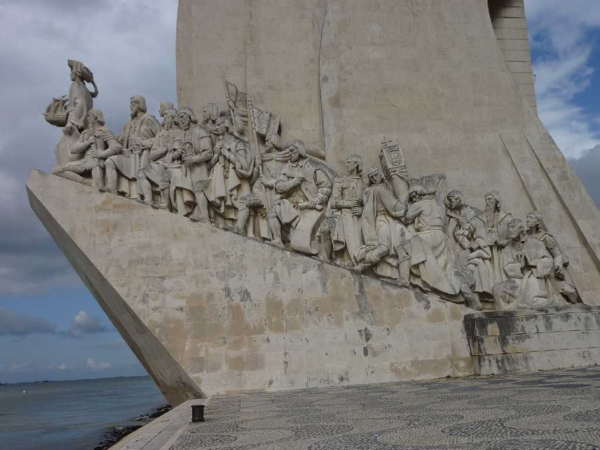
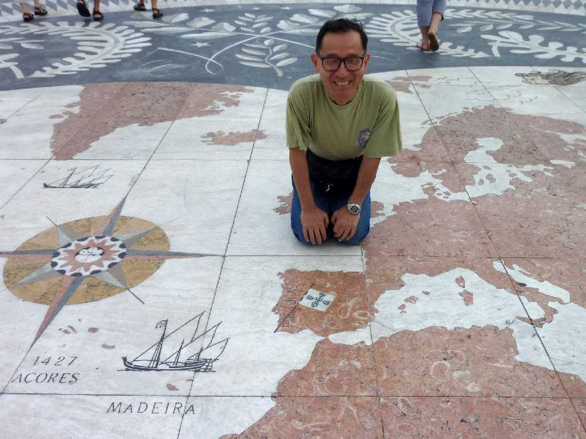
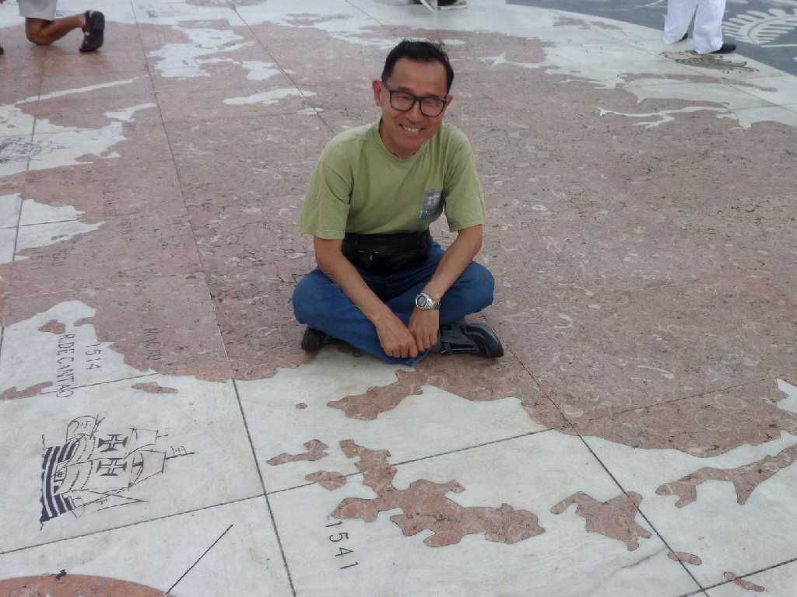

Torre de Belem
バスコダガマの偉業を称え１６世紀の大航海時代に船がテージョ川を出入りする監視塔として創られた要塞

Mosteiro dos Jeronimos
１５０２年マヌエル１世によりバスコダガマのインド航路発見とエンリケ航海王子の偉業を称え大航海時代の富を注ぎ込み１５１１年に完成したマヌエル様式の最高傑作と言われるジェロニモ修道院

Descobrimentos Lisboa
１５世紀ポルトガル栄光の大航海時代を表わした記念碑 先頭に大航海時代の先駆的指導者エンリケ航海王子 東面に大航海時代の王アルフォン５世やインド航路発見者バスコダガマ達が並ぶ

May 28 2010 near Descobrimentos